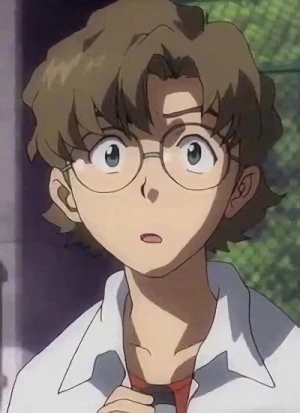

Aida
: Camarade de classe de Shinji et grand ami de Toji, il est le dernier de ce qu'Asuka appelle « le trio des crétins ». Il est passionné par l'armée, la vidéo et la photographie. Son père et son grand-père travaillent pour la NERV et il rêve de devenir pilote d'EVA.